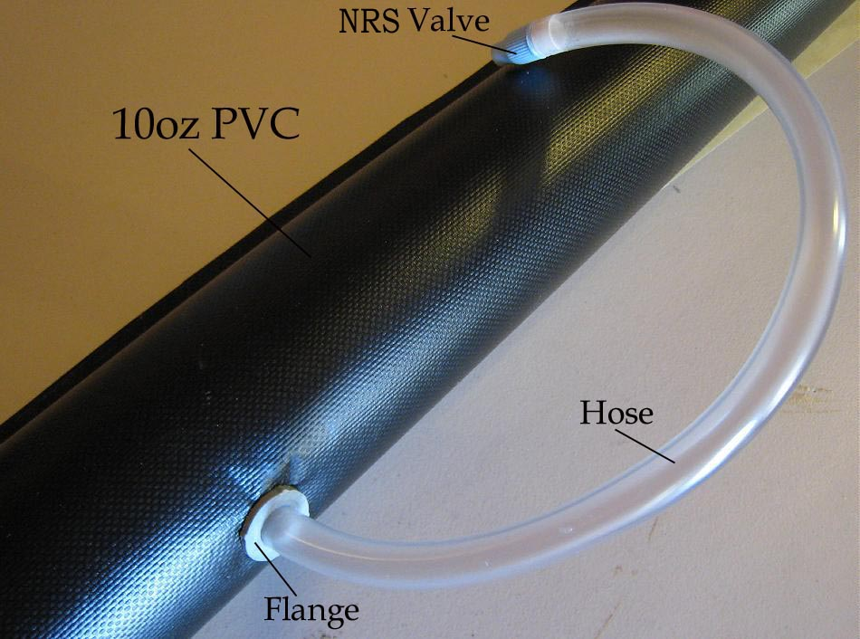

| PVC ( Vinyl) Sponsons ( page 1 of 5) | Menu Last Page Next Page |
|

The 4" diameter PVC sponson above was built using 10oz PVC (vinyl), PVC valve, PVC air tube, PVC flange, and PVC (vinyl) cement. Four PVC sponsons will be built for testing on the Sonnet "Double" inflatable / folder / hybrid. At 18'LOA X 24" beam, the Double will require 2ea X 17.5' X 4.75" upper and 2ea X 16.5' X 4.75" lower sponsons.
|
|